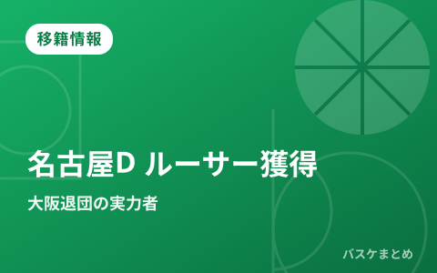

名古屋Dが大阪退団のライアン・ルーサーを獲得 昨季平均16得点のPF／C

名古屋ダイヤモンドドルフィンズが2026年8月4日、大阪エヴェッサを退団していたライアン・ルーサー選手（パワーフォワード兼センター）の獲得を発表しました。昨シーズンは大阪で平均16.0得点をマークした実力者で、本人も加入にあたり前向きなコメントを寄せています。ここでは今回の移籍のポイントを、初心者の方にもわかりやすく整理します。
獲得の概要
名古屋Dが発表したのは、ライアン・ルーサー選手との「新規」契約です。ルーサー選手は前所属の大阪エヴェッサを退団しており、今回あらためて名古屋Dと契約を結ぶ形になりました。ポジションはフロントコート（ゴール近く）を担うパワーフォワード兼センターで、インサイドの得点力とリバウンドが期待される選手です。
| 項目 | 内容 |
|---|---|
| 選手名 | ライアン・ルーサー |
| 新所属 | 名古屋ダイヤモンドドルフィンズ |
| 前所属 | 大阪エヴェッサ |
| ポジション | パワーフォワード／センター |
| 身長／体重 | 204cm／102kg |
| 国籍・年齢 | アメリカ・31歳 |
| 契約区分 | 新規 |
ライアン・ルーサーとは
ルーサー選手はアメリカ出身の31歳。トルコを中心にヨーロッパ各国でプレーした後、2024-25シーズンから大阪エヴェッサでプレーしていました。昨シーズンは56試合に出場し、1試合あたり平均26分20秒の出場で16.0得点・6.5リバウンド・3.0アシストを記録。得点力だけでなく、リバウンドやパスでもチームに貢献できるオールラウンドなビッグマンです。
名古屋Dの補強方針
身長204cmのルーサー選手は、ゴール下での高さと得点力を兼ね備えたタイプです。昨季二桁得点を安定して残していた選手をフロントコートに加えることは、インサイドの厚みを増す狙いがあると考えられます。実績のある外国籍ビッグマンの加入は、新シーズンに向けたチーム編成の中でも注目度の高い動きと言えるでしょう。
来季の注目ポイント
ルーサー選手は加入にあたり「一生懸命努力し、最高のチームメイトになれるよう頑張ります」と意気込みを語っています。個人成績だけでなくチームへの姿勢を大切にする言葉からも、名古屋Dでの活躍が期待されます。新チームでどのように持ち味を発揮するのか、来季の注目ポイントの一つになりそうです。当サイトでは今後も、確定した移籍情報をクラブ別・日付別に整理してお届けします。
出典：バスケット・カウント
https://basket-count.com/article/detail/270082